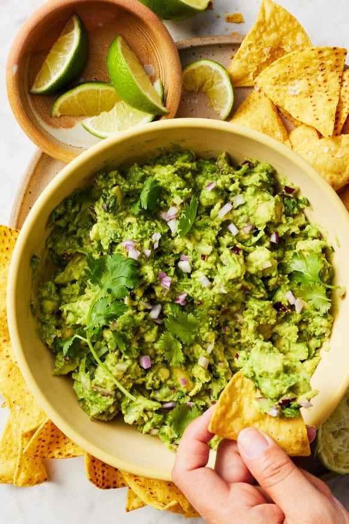

Guacamole
Home

Bowl of fresh Guacamole
Ingredients
- 3 avocados, ripe
- 1/2 cup diced red onion
- 1/4 cup finely chopped fresh cilantro
- Zest and juice of 2 limes
- 1 small jalapeño pepper, diced
- 1/2 teaspoon sea salt, plus more to taste
- 1/2 teaspoon ground cumin, optional
- optional: 1 to 2 Roma tomatoes, seeded and diced
Steps
- In a large bowl, combine the avocados, onion, cilantro,
lime zest and juice, jalapeño, salt, and cumin, if using.
Mash until the ingredients are combined but still a bit chunky.
- Fold in the tomatoes, if using.
- Season to taste and serve.